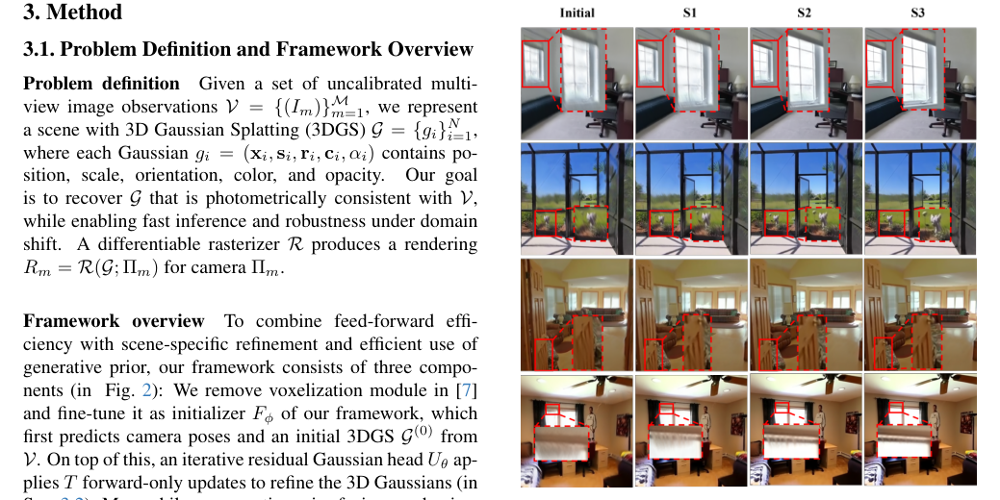
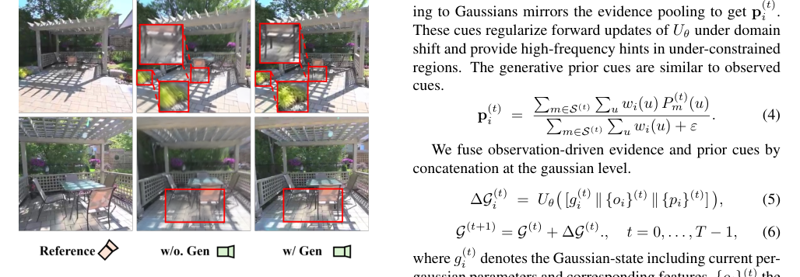

GIFSplat
简单摘要
这些限制源于现有前馈管道中的一次性预测范例。我们引入了 GIFSplat，这是一个纯粹的前馈迭代细化框架，用于从稀疏的未定视图进行 3D 高斯分布。

然而，这种一次性预测引入了两个关键限制。最近的研究倾向于通过集成生成先验来解决此限制，但需要长时间的每个场景优化。
核心创新
第一，然而，现有的前馈方法仍然具有进一步提高性能的潜力，特别是对于域外数据，并且一旦引入生成先验，就很难保留二级推理时间。
第二，我们引入了 GIFSplat，这是一个纯粹的前馈迭代细化框架，用于从稀疏的未定视图进行 3D 高斯分布。
第三，此外，我们从增强的新颖渲染中将冻结扩散先期提炼为高斯级线索，而无需梯度反向传播或不断增加的视图集扩展。
技术细节
同时，生成先验融合机制将扩散增强渲染转换为指导这些更新的高斯级线索（以 sec:prior 为单位）。在第 1 阶段初始化 ( ) 中，我们使用像素重建损失来监督第一个前向预测 在第 2 阶段细化 ( ) 中。


3.1 问题定义和框架概述
可微分光栅化器为相机生成渲染。我们删除了体素化模块并将其微调为我们框架的初始化程序，该框架首先预测相机姿势和来自 的初始 3DGS。同时，生成先验融合机制将扩散增强渲染转换为指导这些更新的高斯级线索（以 sec:prior 为单位）。
3.2 迭代高斯头
在没有测试时间梯度的情况下，迭代头通过预测前向传播的每高斯残差将初始 3DGS 转换为。等效地，它向前近似最小化 ，其中 是冻结图像特征提取器， 是可微分渲染器，更多细节在附录中说明。在步骤中，对渲染的视图进行处理以计算特征差异。
3.3 生成先验融合
我们不是通过从增强视图扩展监督图像集来重新优化场景，而是增强中间渲染并将增强提取为高斯级线索以供下一次残差更新。对于每个 ，我们使用基于扩散的增强器和预训练模型 Difix 增强当前渲染。
3.4 损失函数
我们分两个阶段进行训练，在第一阶段应用几何蒸馏和新颖视图中的光度损失来引导稳定的初始化。在第 1 阶段初始化 ( ) 中，我们使用像素重建损失来监督第一个前向预测 在第 2 阶段细化 ( ) 中。
$$ \mathbf{o}_i^{(t)} \leftarrow \frac{\sum_{m\in\mathcal{S}^{(t)}}\sum_{u} w_i(u)\,O_m^{(t)}(u)} {\sum_{m\in\mathcal{S}^{(t)}}\sum_{u} w_i(u)+\varepsilon}. $$
这条式子给出了论文中的一条核心计算关系。理解时可以先看左侧最终想得到什么结果，再看右侧的 o、i、t、leftarrow 等量如何共同决定这个结果在方法链路中的作用。
$$ \Delta \mathcal{G}^{(t+1)} \leftarrow U_\theta\big(\,[\mathcal{G}^{(t)} \,\|\, \{o_i\}^{(t)}]\,\big), $$
这条式子给出了论文中的一条核心计算关系。理解时可以先看左侧最终想得到什么结果，再看右侧的 Delta、G、t、leftarrow 等量如何共同决定这个结果在方法链路中的作用。
$$ \mathcal{G}^{(t+1)} \leftarrow \mathcal{G}^{(t)}+\Delta \mathcal{G}^{(t)},\quad t=0,\dots,T-1. $$
这条式子给出了论文中的一条核心计算关系。理解时可以先看左侧最终想得到什么结果，再看右侧的 G、t、leftarrow、G 等量如何共同决定这个结果在方法链路中的作用。
$$ \mathbf{p}_i^{(t)} \;=\; \frac{\sum_{m\in\mathcal{S}^{(t)}}\sum_{u} w_i(u)\,P_m^{(t)}(u)} {\sum_{m\in\mathcal{S}^{(t)}}\sum_{u} w_i(u)+\varepsilon}. $$
这条式子给出了论文中的一条核心计算关系。理解时可以先看左侧最终想得到什么结果，再看右侧的 p、i、t、in 等量如何共同决定这个结果在方法链路中的作用。
$$ \Delta \mathcal{G}_i^{(t)} \;=\; U_\theta\big(\,[g_i^{(t)} \,\|\, \{o_i\}^{(t)} \,\|\, \{p_i\}^{(t)}]\,\big), $$
这条式子给出了论文中的一条核心计算关系。理解时可以先看左侧最终想得到什么结果，再看右侧的 Delta、G、i、t 等量如何共同决定这个结果在方法链路中的作用。
$$ \mathcal{G}^{(t+1)}=\mathcal{G}^{(t)}+\Delta\mathcal{G}^{(t)}.,\quad t=0,\dots,T-1, $$
这条式子对应的方法环节是：We fuse observation-driven evidence and prior cues by concatenation at the gaussian level。where denotes the Gaussian-state including current per-gaussian parameters and corresponding features, the observation cues are distilled from rendered–image feature differences, and the prior cues distilled from 扩散-enhanc。从作用上看，它是在把这一环节写成可直接计算的表示、投影规则或优化目标，方便后续模块继续使用。
$$ \mathcal{L}_{\mathrm{rec}} = \lambda_{\mathrm{rgb}}\|I_m - R_m\|_2. $$
这条式子对应的方法环节是：Loss Functions We train in two stages, applying geometric distillation as and photometric loss in novel view during Stage I to bootstrap a stable initialization。In stage 1 initialization ( ), we supervise the first forward prediction with a pixel 重建 loss In stage 2 refinement ( )。从作用上看，它是在把这一环节写成可直接计算的表示、投影规则或优化目标，方便后续模块继续使用。
$$ \mathcal{L}_{\mathrm{stage1}} =\sum_{m\in\mathcal{M}}\big( \mathcal{L}_{\mathrm{rec}}+\mathcal{L}_{\mathrm{dist}} \big). $$
这条式子对应的方法环节是：pplying geometric distillation as and photometric loss in novel view during Stage I to bootstrap a stable initialization。In stage 1 initialization ( ), we supervise the first forward prediction with a pixel 重建 loss In stage 2 refinement ( ), we unroll forward-only refinement steps and supervise each render。从作用上看，它是在把这一环节写成可直接计算的表示、投影规则或优化目标，方便后续模块继续使用。
实验结论
实验部分主要围绕 [1]w/\ #1 [1]w/o\ #1 51 55 Y>m2.2cm C[1]>m#1 Y>p1.8cm 基线和指标 为了与以前的方法进行比较，我们主要考虑三种评估设置 展开。结果表明，完整的配置实现了最佳性能，展示了所有组件之间的互补性。
| Method | Small | Medium | Large | Average | |||||||||
|---|---|---|---|---|---|---|---|---|---|---|---|---|---|
| (lr)3-5(lr)6-8(lr)9-11(lr)12-14 | PSNR | SSIM | LPIPS | PSNR | SSIM | LPIPS | PSNR | SSIM | LPIPS | PSNR | SSIM | LPIPS | |
| 90Pose-Required | pixelNeRF | 18.417 | 0.601 | 0.526 | 19.930 | 0.632 | 0.480 | 20.869 | 0.639 | 0.458 | 19.824 | 0.626 | 0.485 |
| AttnRend | 19.151 | 0.663 | 0.368 | 22.532 | 0.763 | 0.269 | 25.897 | 0.845 | 0.186 | 22.664 | 0.762 | 0.269 | |
| pixelSplat | 20.263 | 0.717 | 0.266 | 23.711 | 0.809 | 0.181 | 27.151 | 0.879 | 0.122 | 23.848 | 0.806 | 0.185 | |
| MVSplat | 20.353 | 0.724 | 0.250 | 23.778 | 0.812 | 0.173 | 27.408 | 0.884 | 0.116 | 23.977 | 0.811 | 0.176 | |
| 90Pose-Free | DUST3R | 14.101 | 0.432 | 0.468 | 15.419 | 0.451 | 0.432 | 16.427 | 0.453 | 0.402 | 15.382 | 0.447 | 0.432 |
| MAST3R | 13.534 | 0.407 | 0.494 | 14.945 | 0.436 | 0.451 | 16.028 | 0.444 | 0.418 | 14.907 | 0.431 | 0.452 | |
| Splatt3r | 14.352 | 0.475 | 0.472 | 15.529 | 0.502 | 0.425 | 15.817 | 0.483 | 0.421 | 15.318 | 0.490 | 0.436 | |
| CoPoNeRF | 17.393 | 0.585 | 0.462 | 18.813 | 0.616 | 0.392 | 20.464 | 0.652 | 0.318 | 18.938 | 0.619 | 0.388 | |
| *3C1cm 2*Method | Pose? | Metrics @ 8 views | ||
|---|---|---|---|---|
| (lr)3-5 | PSNR | SSIM | LPIPS | |
| PixelSplat | 22.55 | 0.727 | 0.192 | |
| MVSplat | 22.08 | 0.717 | 0.189 | |
| FLARE | 23.33 | 0.746 | 0.237 | |
| AnySplat | 23.76 | 0.762 | 0.187 | |
| IFSplat(Ours) | 24.69 | 0.809 | 0.171 | |
| GIFSplat(Ours) | 24.91 | 0.824 | 0.164 | |


4.1 实验设置
实验部分主要围绕 [1]w/\ #1 [1]w/o\ #1 51 55 Y>m2.2cm C[1]>m#1 Y>p1.8cm 基线和指标 为了与以前的方法进行比较，我们主要考虑三种评估设置 展开。结果表明，我们使用 PSNR、SSIM、LPIPS 作为衡量新视图合成性能的指标。
4.2 与前馈基线的比较
实验部分主要围绕 此外，GIFSplat 在生成先验的帮助下获得了最佳结果，保留了精细的纹理，并且比所有其他模型的模糊更少 展开。结果表明，DL3DV 上的 8 视图评估 我们使用 8 个输入视图对数据集 DL3DV 进行评估，结果总结在选项卡：dl3dv 中。
4.3 消融研究
实验部分主要围绕 tab:ablation 验证每个组件的贡献 展开。结果表明，删除迭代细化（第 2 阶段）会在所有指标中产生最大的降级，从而确认迭代残差更新的必要性。
4.4 额外的实验
实验部分主要围绕 准确性单调提高，并且在几步之后表现出明显的收益递减 展开。结果表明，在实践中，我们对所有主要实验使用 a 作为准确性和延迟之间的有利权衡。
理解评价
如果把这篇论文放回问题背景里看，它真正的价值在于：这些限制源于现有前馈管道中的一次性预测范例。这说明作者不是只补一个局部模块，而是在重新组织问题该怎样被解决。
最能支撑这个判断的，还是实验给出的证据：我们引入了 GIFSplat，这是一个纯粹的前馈迭代细化框架，用于从稀疏的未定视图进行 3D 高斯分布。换句话说，这些设计并不只是概念上更完整，而是实实在在改变了最终结果。
当然，它离真正成熟的方案还有距离：当前方案的局限在于它仍然受制于计算资源、输入质量或场景复杂度，距离真正稳健的大规模部署还有差距。后续更值得继续推进的方向，是 将 GIFSplat 扩展到动态内容或灵活的几何先验（例如已知的深度图或法线图）是未来工作的一个有趣方向。